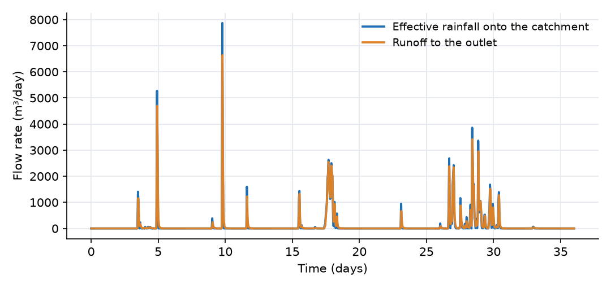
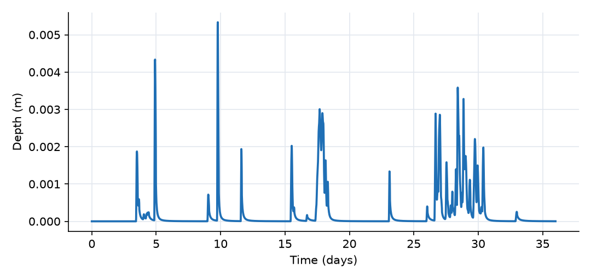

What this model represents
A small paved area, such as a parking lot or a commercial block, that sheds rainfall to a single storm drain inlet. It is the smallest complete rainfall-runoff model in OpenHydroQual: one source (the rainfall record), one block that stores water (the catchment surface), one link (the overland flow that leaves it) and one boundary block (the outlet).
The rainfall record is 36 days of hourly data from late summer 2011. It contains a moderate storm on day 4, a short, very intense storm on day 9, a long storm of 85 mm on day 17 and a wet spell from day 26 to day 30. This mix shows how a fast-responding surface reacts to storms of different intensity and duration.
How it works
Rainfall input. Each row of rainfall.csv gives a time interval and the rain depth that fell in it. OpenHydroQual converts each row to an average intensity, i = depth / (end − start), in m/day (the [mm] unit tag on the file name converts millimetres to metres). Intensities are placed at the middle of each interval and interpolated linearly between them, so the file should use intervals of equal length, as this one does. The rainfall delivered to a block is
P = i · A
where A is the block's area (m²). For this catchment, 1 mm/h corresponds to 288 m³/day.
Catchment water balance. The catchment stores water as a thin sheet with depth d = S / A, where S is the stored volume (m³). Its balance is
dS/dt = C_r · P − Q
where C_r is the runoff coefficient (0.9 here) and Q is the outflow through the Runoff link. The remaining fraction, (1 − C_r) · P, is reported as Precipitation_loss and never enters the storage. Evapotranspiration, external inflow and a first-order loss term (loss_coefficient · S) are available on the Catchment block but are not used here.
Outflow. The Runoff link is a Catchment_link, which applies Manning's equation to a wide, shallow sheet of flow:
Q = 86400 · (W / n) · s^0.5 · max(d − d_s, 0)^(5/3)
with width W = 100 m, Manning's n = 0.015, slope s = 0.005 and depression storage d_s = 0 m. The factor 86400 converts m³/s to m³/day. Because Q grows with depth to the power 5/3, the catchment behaves as a nonlinear reservoir: a deeper sheet drains much faster than a shallow one. Only the catchment's own depth enters the equation, so the outlet cannot back water up onto the catchment.
Outlet. The Outlet is a fixed_head block. Its head and storage are held constant, so it absorbs any flow it receives. Its only role is to give the runoff somewhere to go.
What to look for in the results
- Fast response. Runoff peaks within about 15 minutes of the rainfall peak. With a 5.3 mm sheet, Q ≈ 6,600 m³/day and S ≈ 64 m³, so the catchment's characteristic response time, S / ((5/3)·Q), is about 8 minutes. A paved surface of this size provides almost no attenuation at hourly resolution.
- Peak flow follows intensity, not storm total. The storm on day 9 (41 mm, with 31 mm in its wettest hour) produces the largest runoff peak, about 6,600 m³/day. The day 17 storm deposits twice as much rain (85 mm) but more steadily, never exceeding about 10 mm/h, and its runoff peak is less than half as large.
- Small depths. The ponded depth stays below about 5 mm. After each storm it recedes over a few hours. Because Q ∝ d^(5/3), the tail of the recession is slow: a fraction of a millimetre remains for a day or more.
- Water balance. 381.8 mm over 1.2 ha is 4,581 m³ of rain. With C_r = 0.9, 4,123 m³ enters the catchment storage, and essentially all of it has reached the outlet by the end of the run.
Assumptions and limitations
- The catchment is a single, uniform storage. There is no routing along the flow path, so the hydrograph shape comes only from the nonlinear storage-outflow relation.
- Losses are a fixed fraction of rainfall (the runoff coefficient). There is no infiltration capacity, no initial abstraction and no evaporation between storms. Pervious catchments are better represented with the soil or curve-number examples.
- Rainfall is uniform over the catchment and known at hourly resolution. Within each hour the intensity is interpolated linearly, so bursts shorter than an hour are smoothed.
- The outlet is a free boundary: tailwater in the drain does not affect the runoff.
Model diagram
Hover a block or link to see its name and type. Arrows show the positive flow direction.
Components
Click a component to see every property set in the model file, with units and meaning.
Blocks 2
Storage compartments: each holds water (and dissolved or particulate mass) and has a state that evolves in time.
CatchmentCatchmentA 12,000 m² (1.2 ha) paved surface, 100 m wide and 120 m long in the flow direction, with a 0.5% slope and Manning's n of 0.015 (smooth asphalt). 90% of the rain becomes runoff; the other 10% is treated as lost (wetting, small depressions, evaporation).
Catchment: Catchment
| Property | Value | Unit | Meaning |
|---|---|---|---|
| Manning's Roughness Coefficient | 0.015 | The Manning's roughness coefficient representing surface resistance to flow. Typical values vary by land cover type. | |
| Precipitation | Rainfall | m^3/day | A precipitation source object must be selected. |
| Runoff coefficient | 0.9 | This is the fraction of rain that converts to runoff in case infiltration is not explicitly modeled | |
| Catchment slope in the direction of flow | 0.005 | The average slope of the catchment along the dominant flow direction | |
| The width of the catchment | 100 | m | The average width of the catchment perpendicular to the dominant flow direction |
| Catchment area | 12000 | m2 | Total horizontal surface area of the catchment. Used to compute initial storage and flow-related parameters. |
| Depression storage | 0 | m | The depth of water that is retained in surface depressions and does not contribute to surface runoff. |
| Average water depth | 0 | m | The initial depth of the standing water before the simulation start time. Most of the times, this value is zero |
| Mean elevation of the catchment | 0 | m | The elevation of the centroid of the catchment based on the model datum. |
| Loss coefficient | 0 | 1/day | A coefficient representing losses (e.g., infiltration or leakage) as a first-order rate constant. Used in loss expression. |
Outletfixed_headThe drainage point of the catchment, for example a storm drain inlet. A fixed-head boundary at 0 m that accepts any flow without filling up.
fixed_head: Fixed-head boundary
| Property | Value | Unit | Meaning |
|---|---|---|---|
| Initial Storage | 100000 | m3 | |
| Head | 0 | m |
Links 1
Connections that move water (and the mass it carries) between blocks.
RunoffCatchment_linkSheet flow leaving the catchment, computed from Manning's equation with the catchment's ponded water depth. Always directed from Catchment to Outlet.
Catchment_link: Link from a catchment
Sources 1
External inputs or sinks applied to blocks: rainfall, evaporation, loads, exchange with the atmosphere.
RainfallPrecipitationHourly rainfall depths read from rainfall.csv. Any block that names this source as its precipitation receives the intensity multiplied by the block's area.
rainfall.csv. Any block that names this source as its precipitation receives the intensity multiplied by the block's area.Precipitation: Precipitation
| Property | Value | Unit | Meaning |
|---|---|---|---|
| Precipitation Cumulative | rainfall.csv | mm |
Input files
rainfall.csv | Hourly rainfall. Three columns, comma separated, no header: interval start (days), interval end (days), rainfall depth in that interval (mm). Day 0 is 10 August 2011 at 00:00; the record covers 36 days (864 hourly intervals, 381.8 mm in total). Source: NOAA hourly precipitation at Baltimore/Washington International Airport (BWI), Maryland, USA (US public-domain data, 0.01 inch resolution). The window includes Hurricane Irene (27 to 28 August 2011) and Tropical Storm Lee (7 to 8 September 2011). |
Simulation settings
| Start time | 0 |
| End time | 36 |
| Initial time step | 0.01 |
| Write interval (steps) | 10 |
Results
Produced by running the downloaded model unchanged.

